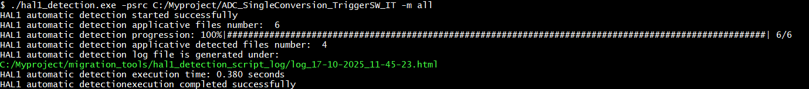
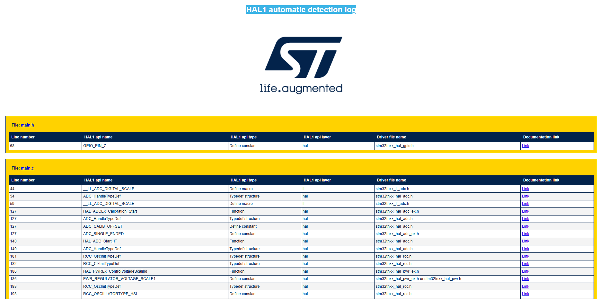
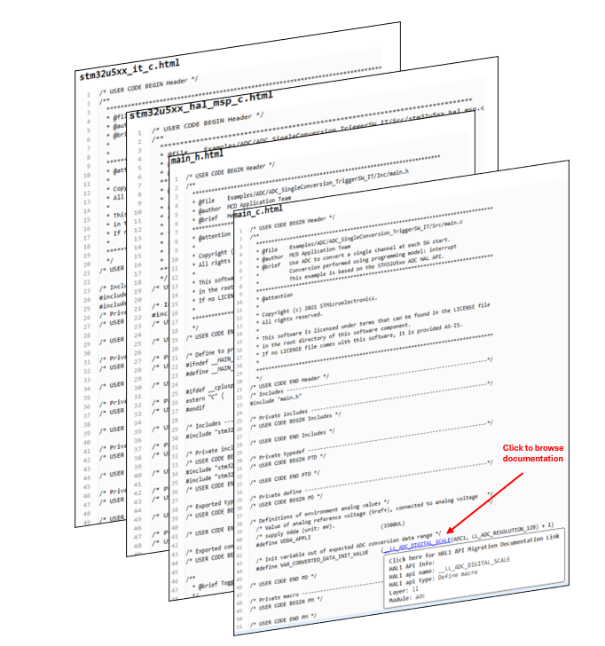

Script Scope ¶
The actual script aims to assist users in migrating their projects from the HAL1 environment to the HAL2 environment. Based on the command-line arguments provided, it automatically detects all HAL1 APIs within the specified path. Upon successful detection, the script generates a comprehensive log files. These logs serve as a detailed guide to assist users in migrating the identified HAL1 API code to the HAL2 environment.
1. HAL1 APIs detection scope ¶
The script utilizes an internally defined database dictionary to perform an in-depth analysis of your project, identifying all occurrences of HAL1 calls and HAL1 implementations (e.g., callbacks).
Refer to 3.1 Script usage section for more details .
Note
Note that the script is capable of filtering out STMicroelectronics driver files (HAL/LL/BSP), which will be automatically excluded from the detection process. Only HAL1 APIs present within the user application files will be identified.
2. HAL1 APIs logging scope ¶
2.1 Console log ¶
Upon execution, the script provides comprehensive status via the console log. This includes detailed information on the overall progress of the operation, as well as specific messages regarding errors, missing libraries (in the case of Python execution), and other relevant status notifications


|
Item |
Description |
|---|---|
|
Files Analyzed |
Total source files scanned. |
|
Progress |
Real-time completion indicator. |
|
Files Detected |
Number of files with HAL1 APIs. |
|
Log File |
Path to the detailed HTML report. |
|
Execution Time |
Total duration of the process. |
|
Status |
Confirms successful completion. |
2.2 File logs ¶
The generated log files serves as a guide for API migrations, offering detailed information about the detected APIs and providing links to relevant documentation.
The script generates two types of logs, each serving the same purpose. Users can select the log format that they find most user-friendly and best suited to their individual preferences.
2.3.1 Global HTML log file
A global HTML
HAL1
automatic
detection
log
file that contain an exhaustive list of detected HAL1 APIs grouped by applicative files.


2.3.2 User Code Log with Direct Links to Migration Docs
An HTML log generated for each file processed , those files presents the user’s application code with all detected HAL1 API references clearly highlighted. Each API occurrence is rendered as a clickable link, directing users to the relevant section of the HAL1 to HAL2 migration documentation.


For more details about log file configurations refer to 2.4 Log file message configuration section.
For more details about log file usage refer to 3.2 Log file usage section.